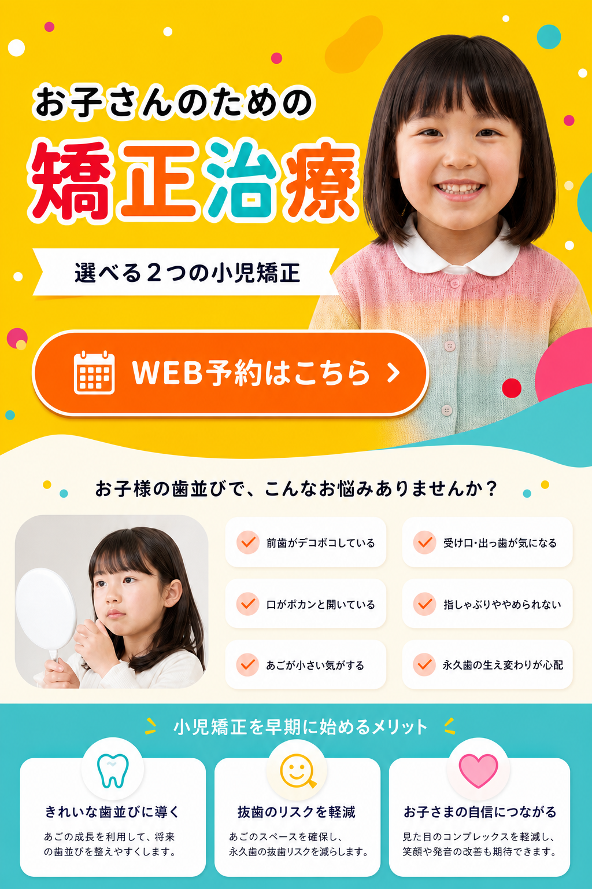
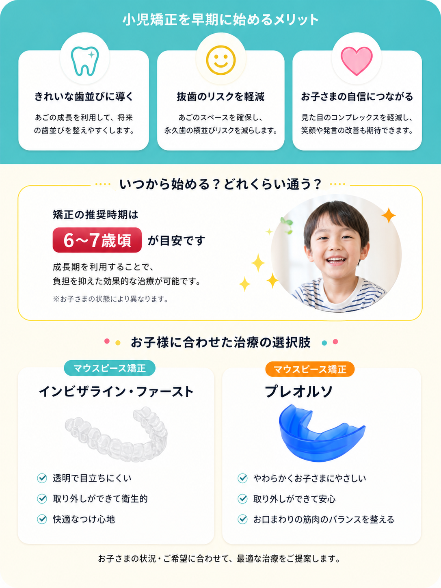
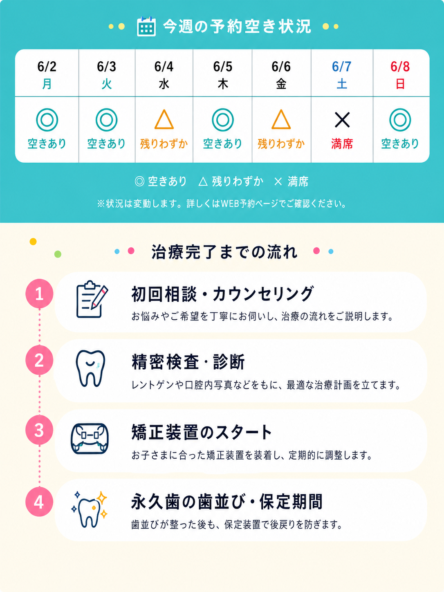
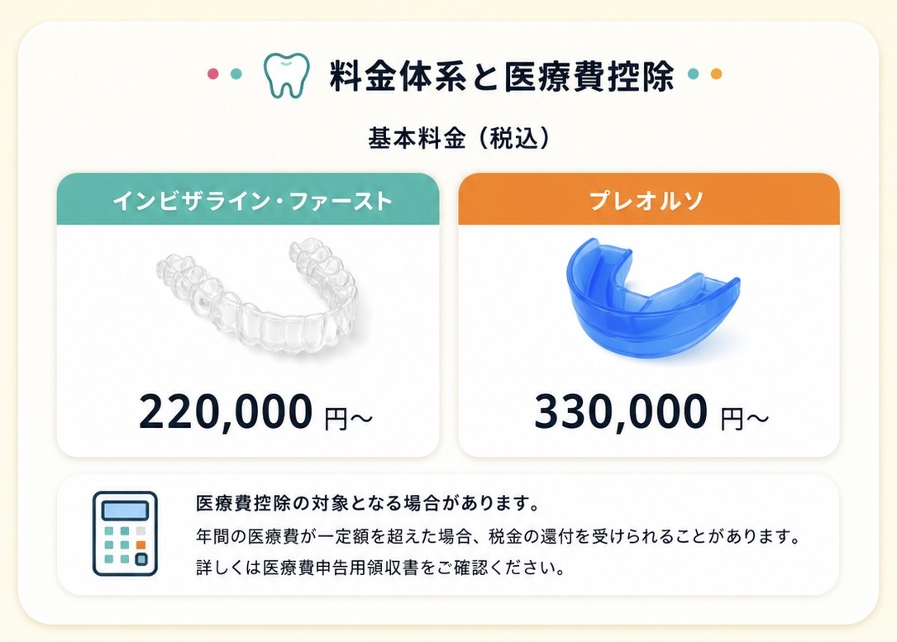
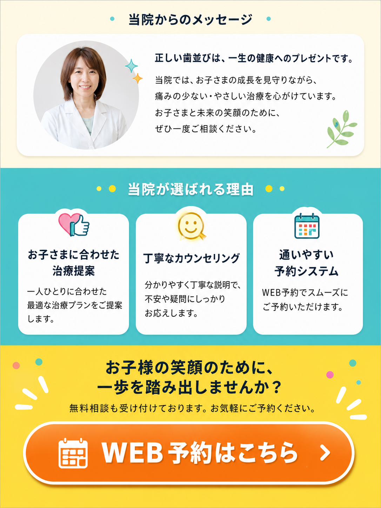

WEB予約はこちら



WEB予約はこちらお子さんのための矯正治療
選べる2つの小児矯正。お子様の歯並びのお悩み、早期に始めるメリット、治療の選択肢、当院からのメッセージ、料金体系と医療費控除、予約空き状況、治療完了までの流れを掲載しています。

WEB予約はこちら



WEB予約はこちら選べる2つの小児矯正。お子様の歯並びのお悩み、早期に始めるメリット、治療の選択肢、当院からのメッセージ、料金体系と医療費控除、予約空き状況、治療完了までの流れを掲載しています。